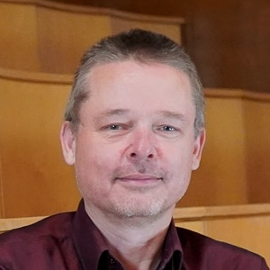

| Address: | University of Copenhagen |
| Department of Computer Science | |
| Universitetsparken 1 | |
| 2100 København Ø | |
| Office: | 3.2.20 |
| Email: | sporring@di.ku.dk |
| Phone: | (+45) 2448 2894 |
| Skype: | jon_sporring |
| Github: | github.com/sporring |
| ORCID: | 0000-0003-1261-6702 |
| ResearcherID: | L-4499-2016 |
| Semantic Scholar: | 1773176 |
| DBLP: | 33/5273 |
| Google Scholar: | COP1HUwAAAAJ |
Jon Sporring received his Master and Ph.D. degree from the Department of Computer Science (DIKU), University of Copenhagen, Denmark in 1995 and 1998, respectively. Part of his Ph.D. program was carried out at IBM Research Center, Almaden, California, USA. Following his Ph.D, he worked as a visiting researcher at the Computer Vision and Robotics Lab at Foundation for Research & Technology - Hellas, Greece, and as an assistant research professor at 3D-Lab, School of Dentistry, University of Copenhagen. During 2003-2018 he was an associate professor at DIKU. From 2008-2009 he was a part-time Senior Researcher at Nordic Bioscience a/s. In the period 2012-13, he is a visiting professor at the School of Computer Science, McGill University, Montreal, Canada. Jon Sporring also co-founded DigiCorpus Aps in 2012 and served as Chief research officer of the company from 2012-16 developing computer vision-based systems for automatic feedback for physiotherapeutic rehabilitation. In 2007-2012, 2015-2019, and 2021 he was Deputy head for Research at DIKU. Since 2018, he is a full professor at DIKU, and since 2019 he is the Deputy head of the Center for Quantifying Images for MAXIV (QIM).
My primary research field is Computer Science (Datalogi) and particularly mathematical and biomedical image processing (Billedbehandling) and pattern recognition (Mønstergenkendelse) and artificial intelligence (Kunstig intelligens, AI). I'm involved in Danish Bioimaging and Quantifying images from MAXIV (and other synchrotron resources) Presently I'm involved in the following projects:
I am involved in the following events:
I teach computer science at bachelor, master, and phd level. Presently I'm involved in the following courses:
For students seeking bachelor and master theses and other project ideas, I post some of my ideas on the Image section's Trello board
Ph.D. students:
I am involved in the following projects, groups, and associations:
Please click here for a full list. I also maintain a Google scholar profile.